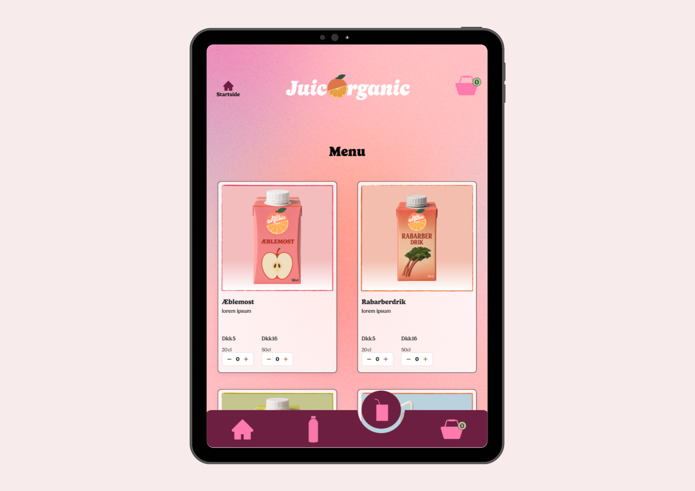
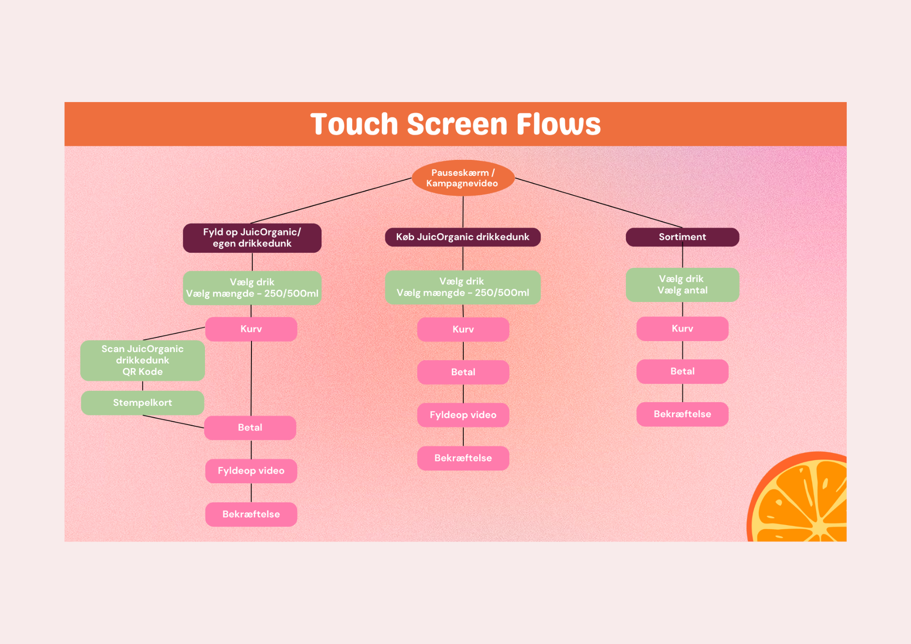
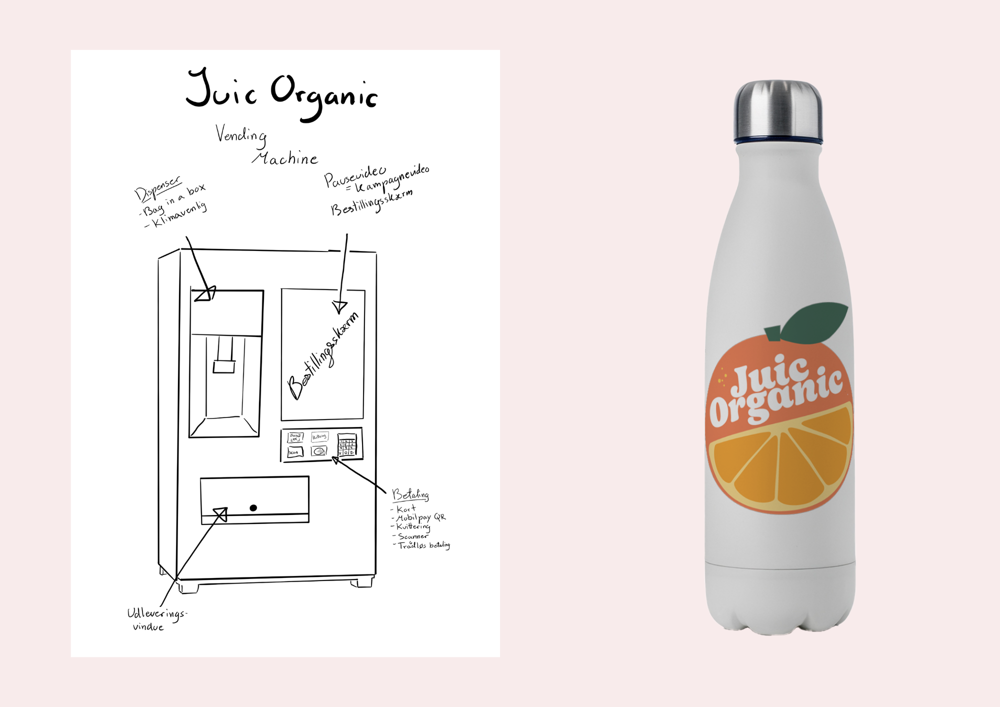
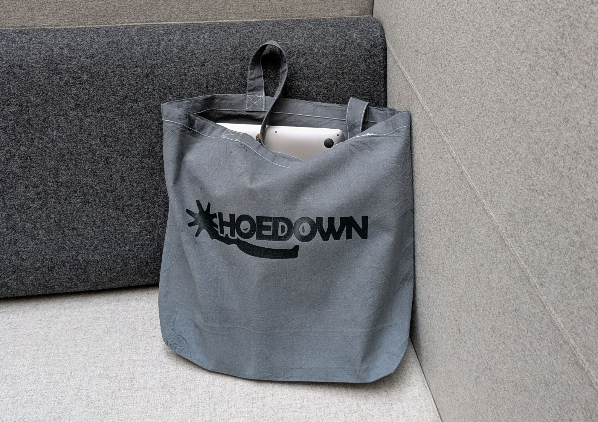
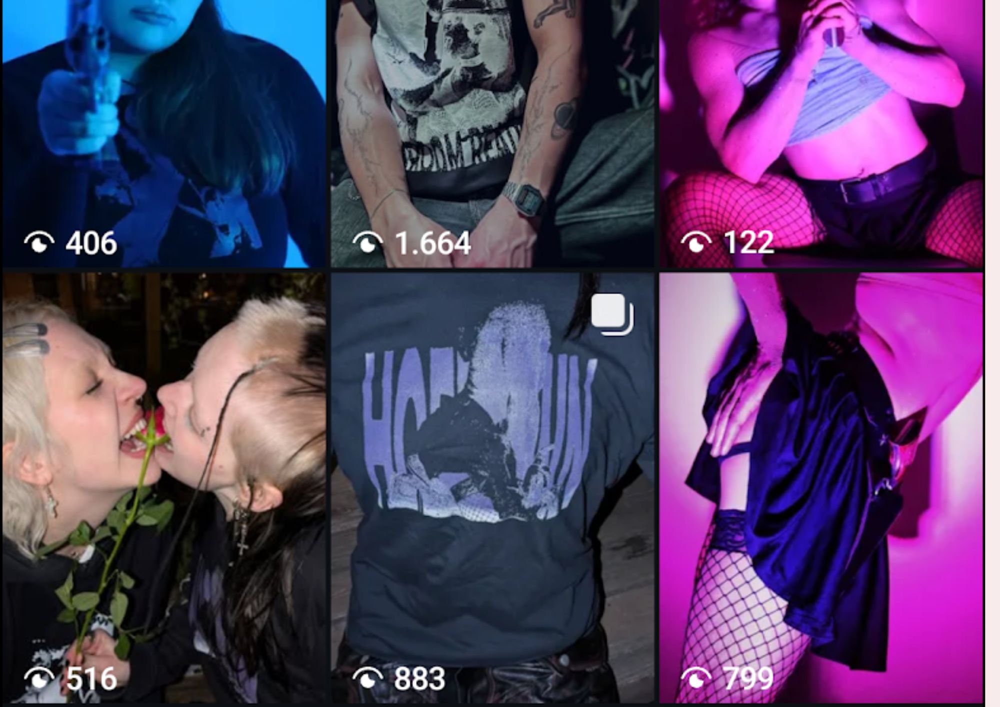
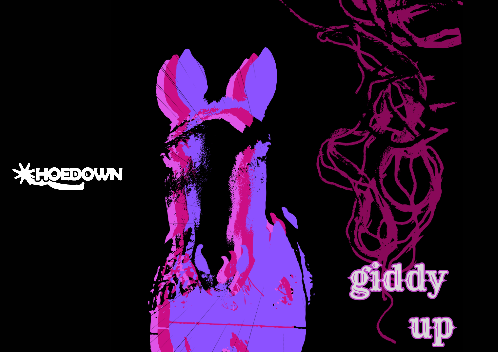
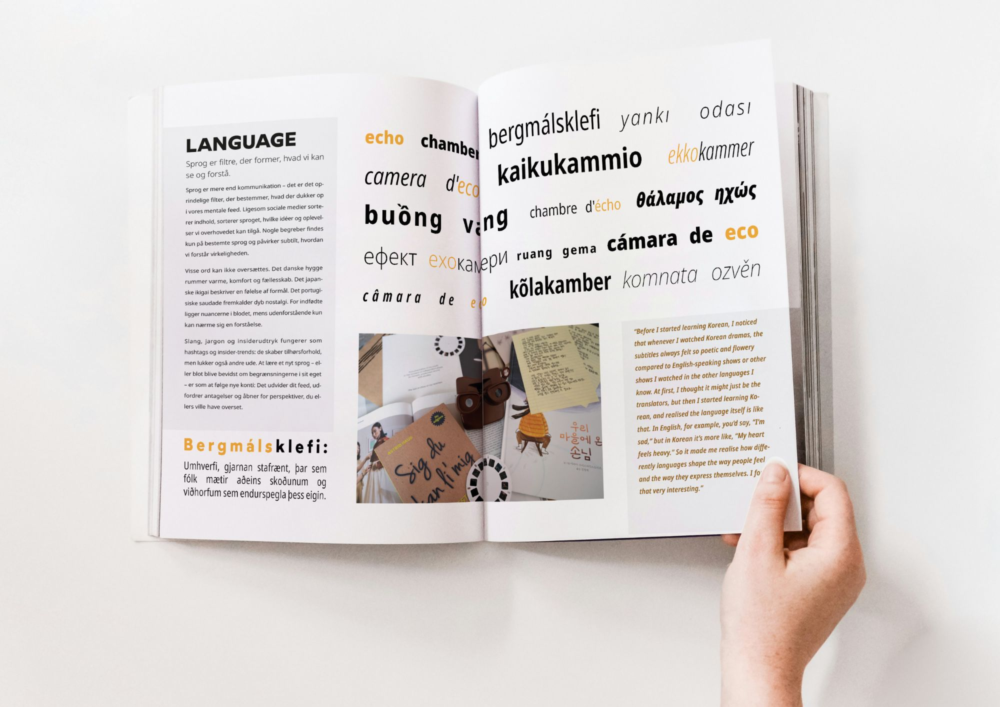
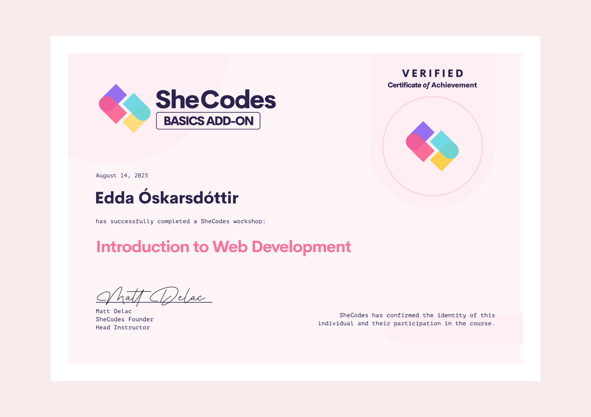

Mine projekter




JuicOrganic
Smart Vending Machine Kiosk UI
JuicOrganic er et dansk juicefirma, der opererer B2B. Vi blev udfordret til at bringe dem direkte til forbrugerne — og i stedet for at designe en typisk landingsside, skabte vi et smart vending machine-koncept, der opfordrer til genbrug af flasker gennem en digital kioskbrugerflade med et indbygget belønningssystem. Jeg ledte UX-researchen og byggede den kodede prototype.
Læs Casestudie
Udfordringen
Briefen var åben: find en måde at bringe JuicOrganic til forbrugerne. Den virkelige designudfordring kom efter vi landede på vending machine-konceptet — hvordan designer man en kioskbrugerflade til brugere, der har travlt? Vi observerede eksisterende touch-brugerflader (McDonald’s bestillingskiosker, kaffemaskiner) og opdagede hurtigt, at vores tidlige wireframes havde for mange trin. Maskinernes placering — trafikknudepunkter, travle lokationer — betod, at interaktionen skulle være hurtig og intuitiv.
Min rolle & proces
- Gennemførte 2 dybdegående interviews med antropologiske metoder om holdninger til bæredygtighed og genbrug af flasker
- Omsatte indsigter til user journey maps, feature-prioriteringer og brugerscenarier
- Itererede wireframes kraftigt — fjernede trin, indtil flowet matchede den hastighed, brugerne havde brug for
- Holdkammerater tog wireframes videre til high-fidelity Figma (visuelt design + illustrationer)
- Kodede et komplet brugerflow som en fungerende front-end-prototype (HTML, SCSS, JavaScript, Bootstrap), optimeret til iPad Pro
- Animerede reklamevideoen til standby-skærmen i After Effects, som også fungerede som indhold til sociale medier
Resultat
Vi leverede en fungerende kodet prototype, et high-fidelity Figma-design og en promoveringsvideo — et komplet produktkoncept, ikke bare skærmbilleder. Projektet fik topkarakter (12). Det jeg er mest stolt af er selve konceptet: vi kunne have spillet sikkert med en simpel hjemmeside, men vi tænkte større og understøttede det med reel research og en funktionel prototype.
Econiq
FinTech SaaS Prototype
En FinTech-stifter havde brug for at gøre et komplekst finansielt forecasting-værktøj tilgængeligt for ikke-eksperter. Hans eksisterende prototype — hovedsageligt AI-genereret — havde ingen navigation, inkonsistente layouts og en informationsarkitektur, der forvirrede selv finansielt kompetente brugere. Vi leverede et komplet redesign: en sammenhængende brandidentitet og en testet Figma-prototype bygget fra bunden.
Læs Casestudie
Udfordringen
Stifteren havde et fungerende koncept, men prototypen var bygget med AI-værktøjer uden designekspertise. Resultatet: intet navigationssystem, for mange trin i onboarding-flowet, en usammenhængende visuel identitet og en informationsarkitektur, der ikke holdt til granskning. Kerneudfordringen var at gøre tætte finansielle data — forecasting-spørgeskemaer, virksomhedsdashboards — tilgængelige for små virksomhedsejere uden finansbaggrund.
Min rolle & proces
Design-team på to personer — jeg ledte UX, min partner stod for den visuelle identitet og UI.
- Auditerede stifterens eksisterende AI-genererede prototype og dokumenterede hvert usability-problem
- Omstrukturerede informationsarkitekturen — reducerede trin og introducerede klar navigation
- Omorganiserede onboarding-wizarden, så brugerne kunne gennemføre den uden at gå tabt
- Byggede den redesignede prototype i Figma
- Testede med 5 brugere (think-aloud-sessioner + interviews) fra et lokalt startup-miljø
- Gennemførte ekspertgennemgange med en finansinstruktør for at validere domænespecifikke flows
Resultat
Stifteren modtog to ting, han ikke havde før: en professionel brandidentitet og en brugbar prototype. Han accepterede redesignet som grundlag for sin produktlancering. Test bekræftede, at brugere kunne navigere forecasting-spørgeskemaet og dashboardet uden hjælp — en klar forbedring i forhold til originalen, hvor selv ekspertanmeldere kæmpede med flowet.

GradeAid
Designpraktik
Tilbage hos GradeAid som designpraktikant efter det oprindelige skoleprojekt. Illustrerer Aidly — en ny brandmaskot — fra bunden i Adobe Fresco og Illustrator, designer læringsstien og PBL-platformens UI i Figma og producerer karakteranimationer i After Effects til web og sociale medier.
Læs Casestudie
Udfordringen
Efter vores skoleprojekt startede jeg som designpraktikant hos GradeAid. Virksomheden havde brug for at tage konceptet fra eksamensprojektet og træffe implementeringsbeslutninger, der gav mening for dem som produkt. Rollen krævede illustration af Aidly (en brandmaskot), redesign af læringsstien baseret på visuel fortælling med karakteren samt skabelse af animationsindhold, der faktisk performer på webben — alt sammen mens det visuelle sprog forblev skånsomt nok til de børn, der bruger det.
Min rolle & proces
- Illustrerede Aidly — GradeAids brandmaskot — fra bunden i Adobe Fresco og Illustrator som visuel guide og læringsledsager på tværs af hele økosystemet
- Skabte et bibliotek af karakterpositurer, udtryk og scenesillustrationer til platformen og markedsføringsmaterialer
- Designede læringsstien og byggede en prototype i Google AI Studio
- Foreslog tilgange til at integrere karakteren på websitet
- Optimerede SVG'er til lette, højopløselige grafikker — rensede eksportkode for at minimere filstørrelse og indlæsningstider
- Udviklede Aidly-animationer i After Effects, Fresco Motion og SVG til PBL-platformen med balance mellem visuel kvalitet og webperformance
- Assisterede med brugertest for at evaluere platformens navigation og tilgængelighed for målgruppen af elever
Resultat
Det største skift fra skoleprojekt til praktik var ejerskab. I skoleprojektet gik alle beslutninger gennem et team. Her ejer jeg karakteren, motion-pipelinen og front-end-eksperimenter fra start til slut. At arbejde i en startup lærte mig at bevæge mig hurtigt med ufærdig information — shippe noget testbart i stedet for at vente på en perfekt brief. Skoleprojektet gav mig empati for brugerne og kreativ frihed; praktikken lærer mig, hvordan man faktisk bygger til dem.
GradeAid
AI-drevet Læringsassistent
GradeAid er en DTU-støttet edtech-startup, der bygger en AI-læringsplatform til børn med behov for ekstra støtte. Vi blev briefet til at designe en visuel identitet og skabe tre animerede karakterer. Vi gik videre — grundede hele produktet i Blue Mind-teori og neuroinklusiv designresearch og reimaginerede det som en gamificeret undervandsverden bygget specifikt til neurodivergente elever.
Læs Casestudie
Udfordringen
Klienten havde fungerende AI-teknologi, men manglede en visuel identitet, et logo og mindst tre animerede karakterer med tilpasselige udseender og tilbehør til at guide børnene gennem appen. Da vi researchede målgruppen — neurodivergente børn med skolevægring — fandt vi, at de eksisterende designvalg (farvepalette, interaktionsmønstre) risikerede at overstimulere netop de brugere, de var tiltænkt. De fleste edtech-løsninger antager en motiveret, neurotypisk elev. Vi skulle designe en oplevelse funderet i, hvordan neurodivergente hjerner faktisk processerer visuel information, motivation og fiasko.
Min rolle & proces
- Bidrog til deskresearch om neuroinklusivt design og Blue Mind-teori
- Gennemførte et ekspertinterview med en specialpædagog om farvepaletter og gamification for neurodivergente børn
- Udarbejdede et 5-faset user journey map fra opdagelse til ambassadørskab
- Designede det fulde gamification-system — koralrev-metafor, XP/valutaloop, alderstilpasset progression og belønningsshop
- Var med til at designe spillets verden og karakterer (Lix, Vitu, Kiko) med tintbare skins og alderstilpasset visuel udvikling
- Bidrog til den visuelle identitet sammen med holdkammerater
- Producerede karakteranimationer i After Effects — langsomme, flydende bevægelser for at undgå vestibulær overstimulering
Resultat
Projektet fik topkarakter (12). Undervisere roste teamets samarbejde — og bemærkede, at alle tre medlemmer var lige engagerede i alle dele af arbejdet. Det der startede som en brief om visuel identitet og karakteranimation blev til en komplet reimaginering af produktet. Vi udfordrede klientens eksisterende farvevalg med researchbaserede alternativer, introducerede et gamification-system de ikke havde bedt om, og leverede et koncept funderet i reel testning med børn og ekspertvalidering fra en specialpædagog.
Das Kleine Büro
Digitalt Bureaussimulering
En seks-ugers simulering af et reelt digitalt bureau: ni personer, fem klientopgaver, ét teammedlem der arbejdede remote fra en anden tidszone. Jeg styrede teamets workflow, sammensatte sub-teams baseret på individuelle kompetenceprofiler og holdt flere klientleverancer på sporet — mens jeg lærte at træde ind i en lederrolle, jeg ikke oprindeligt havde forventet.
Læs Casestudie
Udfordringen
Omfanget var bevidst overvældende — det var pointen. Ni mennesker med forskellige kompetencer, ambitionsniveauer og arbejdsstile skulle levere reelt arbejde til reelle klienter samtidigt. Udfordringen var ikke kun at producere godt designarbejde — det var at opbygge en teamstruktur, der faktisk kunne fungere under pres, med klare kommunikationskanaler og ansvarlighed.
Min rolle & proces
- Lavede en undersøgelse af teamets hårde og bløde kompetencer samt arbejdspræferencer for at sammensætte sub-teams
- Tildelte klientopgaver — matchede folk med projekter for maksimal effektivitet
- Indførte daglige stand-ups for overblik over alle projekter og tidlig identifikation af flaskehalse
- Tildelte én kontaktperson per klient for at holde kommunikationen fokuseret
- People management — opmuntrede holdkammerater til at tage ejerskab, trådte til ved behov, holdt kvaliteten konsistent
- Tog direkte ejerskab af én klientopgave (Econiq) sideløbende med koordineringsopgaverne
Resultat
Alle klientprojekter blev leveret til deadline. Da tre bureauteams skulle vælge ét team at samarbejde med, valgte begge lokale teams det internationale team — men det internationale team valgte os, med henvisning til vores inkluderende teamkultur. Undervisere fremhævede vores samarbejde som eksemplarisk. Den største personlige erkendelse: jeg gik ind og kaldte mig selv ”bare en koordinator” og kom ud med en forståelse af, at effektive teams har brug for nogen, der er villig til at lede, ikke bare organisere.






Hoedown After Dark
E-commerce Brand
Et tøjmærke der blander western-æstetik med underground techno-kultur og queer-miljøet. Vi designede brandet, byggede en webshop og solgte rigtige produkter — og donerede al omsætning til LGBT Asylum. Jeg ledte brandstrategien og projektkoordineringen, mens jeg var med til at forme den visuelle identitet.
Læs Casestudie
Udfordringen
Briefen var at skabe et fungerende e-commerce-brand fra bunden — produktdesign, webshop og faktiske salg. Den virkelige udfordring var at bygge et brand med en ægte identitet, ikke bare en studieøvelse. Vi lænte os ind i gruppens fælles tilknytning til queer-kultur og technoscenen, hvilket gav brandet en autenticitet, som et mere generisk koncept ikke ville have haft.
Min rolle & proces
- Ledte brandstrategien — Business Model Canvas, SEO og persuasive designprincipper
- Anvendte CTA-hierarki og donationsframing for at drive konverteringer og velgørenhedsbidrag
- Validerede konceptet med Lean Startup-metoder: MVP testet på et loppemarked i en technoklub med queer-rødder
- Brugte direkte feedback fra målgruppen til at forme den endelige produktlinje og brandretning
Resultat
Vi lancerede en fungerende webshop, solgte rigtige T-shirts, tote bags og stickers, og donerede al omsætning — næsten 1.000 DKK — til LGBT Asylum. Vi var den eneste gruppe, der donerede deres indtjening, og den bedst sælgende gruppe ved projektfremvisningen. Brandet fik ægte traction på Instagram, inklusiv en DJ der postede et foto i vores T-shirt, hvilket gav betydelig engagement. Projektet skiller sig ud i min portfolio for at være det mest kreativt anderledes — og for at bevise, at det at læne sig ind i en specifik subkultur skaber et langt stærkere brand end at forsøge at appellere til alle.




Gestalt
Digitalt Magasin
En feature-artikel til et kollaborativt digitalt magasin, der argumenterer for, at ekkokamre ikke kun er et onlinefænomen — de er bygget ind i vores kulturer, sprog og fællesskaber. Jeg skrev artiklen, fotograferede alle originale assets og designede layoutet i InDesign med Gestalt-principper og strenge grid-systemer.
Læs Casestudie
Udfordringen
Temaet var perception og virkelighed. Jeg skulle finde en vinkel, der gik ud over den oplagte “sociale medier er dårlige”-fortælling, og derefter eksekvere alle dele — koncept, research, skrivning, fotografi og layout — som et soloprojekt.
Min rolle & proces
- Trak på min antropologiske baggrund for at indramme ekkokamre som hverdagsfænomener: kultur som “den oprindelige algoritme”, sprog som et filter, fællesskaber som feedback-loops
- Interviewede venner for at undgå at skrive indefra min egen boble — brugte deres citater gennem hele artiklen
- Fotograferede rigtige mennesker for at skabe et visuelt sprog, der afspejlede temaet
- Redigerede fotografier i Lightroom
- Designede det fulde layout i InDesign med Gestalt-principper og grid-systemer
Resultat
Artiklen blev publiceret i det endelige kollaborative magasin. En underviser bemærkede, at layoutet lignede noget fra et professionelt tidsskrift. Projektet demonstrerer visuel tænkning, grid-baseret design og evnen til at eje en hel kreativ proces fra koncept til færdigt produkt.


SheCodes
Front-end-udvikling · Igangværende
Jeg styrker mine front-end-kompetencer gennem SheCodes, et globalt anerkendt kodeprogram for kvinder i tech. Forløbet dækker HTML, CSS og JavaScript med hands-on workshops — jeg er i gang med Plus-sporet, som fokuserer på interaktive applikationer og API-integration.
Hvad jeg har øvet
- Responsive layouts med Flexbox og CSS Grid
- JavaScript DOM-manipulation og event handling
- Opbygning og deployment af flersidede websites